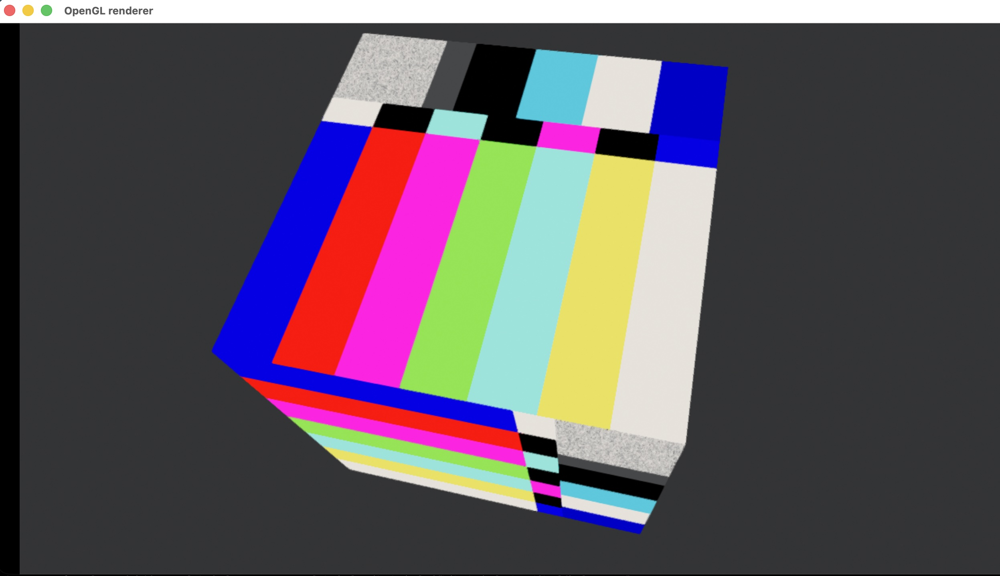

FLUX is an open, low-latency media transport protocol designed for professional broadcast and real-time production. It combines adaptive unicast QUIC streams with scalable UDP multicast, integrating synchronization, tally, discovery, in-stream 3D embedding, and upstream control in a single coherent fabric.
FLUX defines two complementary transport profiles to cover the full spectrum of production topologies.
QUIC Datagram (RFC 9221) over UDP. Adaptive, encrypted, connection-oriented point-to-point delivery with per-client feedback.
UDP Source-Specific Multicast (SSM) with proactive RaptorQ FEC. Scales to unlimited receivers with no per-receiver signalling.
fluxmcastrelayEvery FLUX implementation is built on seven orthogonal subsystems, each addressable independently.
Receivers report per-frame loss and RTT; the sender adjusts bitrate and FEC ratio in real time. Adaptive quality without over-provisioning. FLUX/QUIC only.
Software PTP distributed via the FLUX stream itself. ±50–500 µs inter-stream alignment without dedicated hardware. Optional hardware PTP for sub-10 µs accuracy.
Two-tier service discovery: mDNS / DNS-SD for zero-config LAN operation, and an HTTP/JSON registry for enterprise-scale topologies.
First-class tally in the protocol fabric. JSON representation for configuration; compact 3-bit binary (8 states: OFF, PGM, PVW, RECORD, STREAM, HOTSPOT, REHEARSAL, FAULT) in-stream.
Every FLUX source optionally emits a low-bitrate confidence sub-stream (the Monitor Stream) derived automatically from the primary essence, enabling passive monitoring without extra encoder instances.
Binary channels embedded inside a FLUX stream carry GLB, USD, Gaussian Splats, delta updates, EXR frames, CSV, MoCap, LED config, ANC, tracking data, and live video textures via flux:// URIs — multiplexed alongside video and audio with frame-accurate timing.
A rate-limited, authenticated reverse channel for PTZ commands, audio mix automation, routing requests, and generic device control. Operates within the same QUIC connection, no side-channel required.
How FLUX stands against common professional media transport protocols.
| Feature | FLUX | SRT | RIST | NDI | SMPTE 2110 | OMT |
|---|---|---|---|---|---|---|
| Transport | QUIC / UDP SSM | UDP | UDP | UDP | UDP RTP | UDP |
| Encryption | TLS 1.3 / AES-256-GCM | AES-128/256 | AES-128/256 | Optional | No | Optional |
| Adaptive bitrate (CDBC) | Yes | No | No | Partial | No | No |
| Multicast | Yes (SSM + RaptorQ) | No | No | No | Yes | No |
| Sub-ms synchronization | Yes (SW-PTP ±50 µs) | No | No | No | Yes (PTP HW) | No |
| Built-in tally | Yes (FLUX-T) | No | No | Metadata only | No | No |
| In-stream 3D / binary embedding | Yes (FLUX-E) | No | No | No | No | No |
| Live video texture URIs (flux://) | Yes | No | No | No | No | No |
| Upstream control channel | Yes (FLUX-C) | No | No | Partial | No | No |
| Service discovery | Yes (DNS-SD + HTTP registry) | No | No | mDNS | No | No |
| Open spec / open source | Yes (BSD-3-Clause) | Yes | Yes | No | Paid standard | Yes |
The FLUX GStreamer plugin suite provides a complete set of pipeline elements for every role in the signal chain.
fluxsrcFLUX/QUIC sourcefluxsinkFLUX/QUIC sinkfluxdemuxStream demultiplexerfluxsyncMulti-stream sync (MSS)fluxembedsrcFLUX-E embed sourcefluxembeddecFLUX-E embed decoderfluxdeltadecGLB / GS delta decoderfluxvideotexLive video texture (GLB)fluxcdbcBandwidth control feedbackfluxtallyTally state handler (FLUX-T)fluxcryptoEncrypt / decryptfluxmcastsrcFLUX/M multicast sourcefluxmcastrelayMulticast → QUIC gatewayfluxmcastsinkFLUX/M multicast sinkfluxgsresidualdecGS residual decoderfluxframerFLUX frame packetizerfluxvideotex
fluxvideotex uses Filament
— Google's physically-based real-time rendering engine — as a headless offscreen compositor.
Each incoming RGBA video frame is uploaded as a GPU texture, set as the
baseColorMap of every material instance in the loaded GLB scene,
and the result is rendered and read back as a GStreamer buffer.
The element runs entirely in software: no display server, no window, no GPU display output.
The OpenGL context is headless (Engine::Backend::OPENGL) with an offscreen
SwapChain configured CONFIG_READABLE for DMA readback.
FLUX uses a fork of Filament —
jesusluque/filament
(PR #1,
commit a7b0837)
— which adds Rec.709/Rec.2020/PQ/HLG color spaces and Y'CbCr output to
ColorGrading. These are not in upstream google/filament.
matc steprotation-period-* props (software only — GLB animation tracks not played)readPixels with pumpMessageQueues() spin (macOS)color-space property
Filament's ColorGrading post-processing is configured at scene creation time.
The color-space property maps directly to the Filament
(Gamut - TransferFunction - WhitePoint) DSL:
| Value | Filament expression | Use |
|---|---|---|
| srgb (default) | Rec709 - sRGB - D65 | Standard web / display |
| bt709 | Rec709 - BT709 - D65 | HD broadcast OETF |
| rec709-linear | Rec709 - Linear - D65 | Linear light compositing |
| rec2020-linear | Rec2020 - Linear - D65 | Wide-gamut linear |
| rec2020-pq | Rec2020 - PQ - D65 | HDR10 / SMPTE ST.2084 |
| rec2020-hlg | Rec2020 - HLG - D65 | HLG / ARIB STD-B67 |
ycbcr-output property
When ycbcr-output=true, Filament's ColorGrading::ycbcrOutput()
encodes the colour-graded result as packed Y'CbCr into the RGBA8 readback buffer
(R=Y', G=Cb, B=Cr, A=1).
The element advertises AYUV on its src pad so downstream encoders and
muxers receive the correct signal with no extra videoconvert step.
glb-file property
The default scene is a unit cube with KHR_materials_unlit and
baseColorTexture.uri = "flux://channel/0", generated at build time
by gen_cube.py and embedded as a C byte array via xxd -i.
Set glb-file to any GLB path to use a different mesh — any material
whose baseColorTexture URI is flux://channel/0 receives
the live video feed; other materials are untouched.
GLB animation tracks are not played. The gltfio animator
is not invoked — all motion comes from the software rotation driven by
rotation-period-*. The GLB provides mesh geometry and materials only.
gst-launch-1.0// Built-in cube, SDR, default rotation GST_PLUGIN_PATH=/path/to/flux/tools/gstreamer/target/release:\ /path/to/flux/tools/filament/build/gst-fluxvideotex \ gst-launch-1.0 \ videotestsrc pattern=smpte is-live=true \ ! videoconvert \ ! "video/x-raw,format=RGBA,width=1280,height=720,framerate=30/1" \ ! fluxvideotex width=1280 height=720 \ color-space=srgb ycbcr-output=false \ ! "video/x-raw,format=RGBA,width=1280,height=720" \ ! videoconvert \ ! glimagesink sync=false // Custom GLB mesh, fast rotation, HLG Y'CbCr ! fluxvideotex width=1280 height=720 \ glb-file=/path/to/scene.glb \ rotation-period-x=10 rotation-period-y=15 rotation-period-z=20 \ color-space=rec2020-hlg ycbcr-output=true \ ! "video/x-raw,format=AYUV,width=1280,height=720" \ ! videoconvert ! ...
FLUX-E multiplexes typed binary channels alongside video and audio inside a single FLUX stream.
Each channel is identified by a MIME type and carries a flux://-addressable asset,
enabling real-time delivery of 3D scenes, neural renders, metadata, and control data with
frame-accurate timing and no out-of-band signalling.
Supported MIME types (v0.6.3):
Current state of the reference implementation (macOS, Rust + GStreamer). The FLUX/QUIC unicast core is fully operational. FLUX/M multicast, FLUX-E embedding beyond video textures, and several GStreamer elements remain on the roadmap.
| 32-byte FLUX header encode/decode | ✓ | flux-framing |
| All frame types 0x0–0xF | ✓ | Defined and dispatched by fluxdemux |
| All FLAGS bits | ✓ | KEYFRAME, HAS_METADATA, DROP_ELIGIBLE active in PoCs |
| SESSION handshake (§3.1–§3.2) | ✓ | JSON over QUIC Stream 0 |
| Capabilities negotiation | ✓ | Codec, HDR, embed, FEC, tally all serialised |
| KEEPALIVE / session-dead (§3.3) | ✓ | 5 s interval, 3-miss dead threshold |
| CAPTURE_TS_NS_LO wraparound (§4.2) | ✓ | reconstruct_capture_ts() |
| Multi-fragment reassembly | ~ | FRAG field present; reassembly path not exercised |
| QUIC Datagram transport (RFC 9221) | ✓ | quinn 0.11 |
| TLS 1.3 (crypto_quic) | ✓ | rustls — self-signed cert, skip-verify in PoC |
| Stream-per-AU delivery | ✓ | Each AU on its own unidirectional QUIC stream |
| Certificate validation (production) | ✗ | PoC uses skip-verify — not production-safe |
| Per-layer QUIC priority (§5.5) | ✗ | quinn supports it; not wired |
| Adaptive feedback interval (§5.1) | ✓ | fluxcdbc — 50 ms normal, 10 ms under loss |
| CDBC_FEEDBACK frame (§5.2) | ✓ | flux-framing |
| BwGovernor: PROBE→STABLE→RAMP (§5.3) | ✓ | flux-framing; unit-tested |
| EMERGENCY shed sequence (§5.4) | ✓ | Defined in BwGovernor::ingest |
| NetSim (loss / delay / BW cap) | ✓ | fluxsrc — token-bucket, prob. drop, delay queue |
| High-fps considerations (§5.6) | ✗ | 120–240 fps path not exercised |
| Timestamp-keyed slot barrier (§6.3) | ✓ | fluxsync — BTreeMap + condvar, poc002 |
| GROUP_TIMESTAMP_NS snapping | ✓ | 33 ms grid on server; all streams share same key |
| Eviction timeout + stats | ✓ | frames-synced, frames-dropped, max-skew-ns |
| SYNC_ANCHOR frame (§6.4) | ~ | Frame type defined; not emitted in PoCs |
| Hardware PTP (§6.1) | ✗ | Software-PTP only |
| Default port constants (7400/7401/7500) | ✓ | flux-framing |
| DNS-SD / mDNS (§7.1) | ✗ | — |
| HTTP/JSON Registry (§7.2) | ✗ | — |
| TallyUpdate frame type + capability flag | ~ | Frame type dispatched; no fluxtally element yet |
| Compact 3-bit tally binary mode (§8.2) | ✗ | — |
| MONITOR_COPY flag + monitor_stream_id cap | ~ | Flags/caps present; sub-stream not generated |
| EmbedManifest / EmbedChunk frame types | ✓ | Defined and routed |
| embed_support capability negotiation | ✓ | Full EmbedSupport struct in SessionRequest |
| embed_cache declared assets | ✓ | EmbedCacheEntry in SessionRequest |
| video_texture_bindings (§10.8) | ✓ | fluxvideotex — Filament OpenGL, poc003 |
| flux:// URI scheme (§10.10) | ✓ | Parsed and applied in fluxvideotex |
| bufferView fallback PNG (§10.10.3) | ✓ | poc003 |
| EMBED_MANIFEST payload encode/decode | ✗ | Frame type routed; payload schema not encoded |
| fluxembedsrc / fluxembeddec elements | ✗ | Spec §16 — not yet implemented |
| GS Residual Codec Framework (§10.9) | ✗ | fluxgsresidualdec not yet implemented |
| FLUX-E Delta / QUEEN-v1 (§11) | ✗ | — |
| MetadataFrame (0xC) encode/decode | ✓ | flux-framing |
| PTZ command | ✓ | Sent by poc001; logged by server |
| audio_mix command | ✓ | Sent by poc001; logged by server |
| routing command | ✓ | Sent by poc001; logged by server |
| test_pattern command | ✓ | Live pattern switch via videotestsrc |
| Rate limiting (§12.1) | ✗ | Field defined; not enforced |
| FEC_GROUP field + fec_support negotiation | ~ | Capability negotiated; repair frames not generated |
| XOR row FEC | ✗ | Declared; not generated |
| RS-2D FEC | ✗ | — |
| FLUX/M — UDP SSM multicast | ✗ | fluxmcastsrc/sink/relay not implemented |
| FLUX/M — RaptorQ proactive FEC (§18.7) | ✗ | — |
| FLUX/M — AES-256-GCM group keys (§18.5) | ✗ | — |
| FLUX/M — AMT tunneling (§18.10) | ✗ | — |
| TLS 1.3 transport encryption | ✓ | QUIC/rustls — active in all PoCs |
| Certificate validation (production) | ✗ | Skip-verify PoC only |
| fluxcrypto payload encryption element | ✗ | Spec §16 — not yet implemented |
| fluxsrc | ✓ | QUIC receiver with NetSim |
| fluxsink | ✓ | QUIC sender with FLUX-C dispatch |
| fluxframer | ✓ | FLUX packetiser |
| fluxdeframer | ✓ | FLUX depacketiser |
| fluxdemux | ✓ | Frame type router (dynamic pads) |
| fluxcdbc | ✓ | CDBC feedback observer |
| fluxsync | ✓ | MSS sync barrier |
| fluxvideotex | ✓ | Live video texture — Filament/OpenGL (C/C++) |
| fluxtally | ✗ | Tally state handler |
| fluxembedsrc | ✗ | FLUX-E embed source |
| fluxembeddec | ✗ | FLUX-E embed decoder |
| fluxdeltadec | ✗ | GLB / GS delta decoder |
| fluxcrypto | ✗ | Payload encryption |
| fluxmcastsrc | ✗ | FLUX/M multicast source |
| fluxmcastsink | ✗ | FLUX/M multicast sink |
| fluxmcastrelay | ✗ | Multicast ↔ QUIC relay |
| fluxgsresidualdec | ✗ | GS residual decoder |